# !pip install timm
# !pip install evaluateCIFAR-10
Fastai
The famous CIFAR-10
import gc
import torch
gc.collect()
torch.cuda.empty_cache()import timm
from fastai.vision.all import *cifar_path = untar_data(URLs.CIFAR)cifar_path.ls()[Path('/home/tzyy/.fastai/data/cifar10/labels.txt'), Path('/home/tzyy/.fastai/data/cifar10/train'), Path('/home/tzyy/.fastai/data/cifar10/models'), Path('/home/tzyy/.fastai/data/cifar10/test')]train_path = cifar_path/'train'train_path.ls()[Path('/home/tzyy/.fastai/data/cifar10/train/deer'), Path('/home/tzyy/.fastai/data/cifar10/train/airplane'), Path('/home/tzyy/.fastai/data/cifar10/train/bird'), Path('/home/tzyy/.fastai/data/cifar10/train/cat'), Path('/home/tzyy/.fastai/data/cifar10/train/truck'), Path('/home/tzyy/.fastai/data/cifar10/train/ship'), Path('/home/tzyy/.fastai/data/cifar10/train/horse'), Path('/home/tzyy/.fastai/data/cifar10/train/frog'), Path('/home/tzyy/.fastai/data/cifar10/train/automobile'), Path('/home/tzyy/.fastai/data/cifar10/train/dog')]frog_path = train_path/'frog'frog = frog_path.ls()[0]
frogPath('/home/tzyy/.fastai/data/cifar10/train/frog/35672_frog.png')frog_img = PILImage.create(frog)tensor(frog_img).shapetorch.Size([32, 32, 3])show_image(PILImage.create(frog), figsize=(3, 3), title='FROG')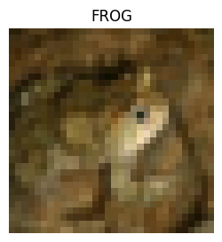
dls = ImageDataLoaders.from_folder(cifar_path, valid='test')dls.show_batch()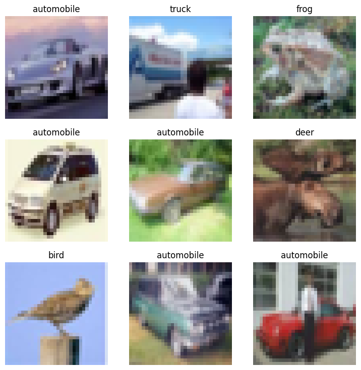
Resnet18
learner = vision_learner(dls, resnet18, metrics=accuracy, cbs=ActivationStats(with_hist=True))Downloading: "https://download.pytorch.org/models/resnet18-f37072fd.pth" to C:\Users\ChenBo/.cache\torch\hub\checkpoints\resnet18-f37072fd.pth100%|██████████| 44.7M/44.7M [01:32<00:00, 505kB/s]learner.lr_find()SuggestedLRs(valley=0.002511886414140463)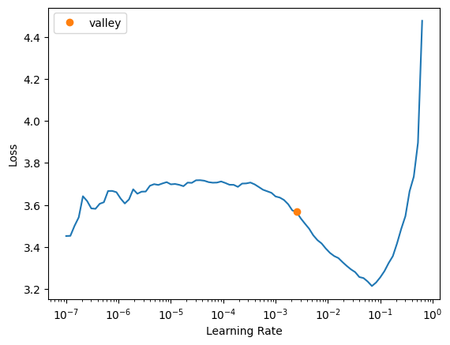
learner.fine_tune(5, 3e-3)| epoch | train_loss | valid_loss | accuracy | time |
|---|---|---|---|---|
| 0 | 1.624713 | 1.450234 | 0.485600 | 05:30 |
| epoch | train_loss | valid_loss | accuracy | time |
|---|---|---|---|---|
| 0 | 0.969554 | 0.845865 | 0.706800 | 01:14 |
| 1 | 0.709484 | 0.675392 | 0.771300 | 01:14 |
| 2 | 0.563003 | 0.614332 | 0.793900 | 01:40 |
| 3 | 0.339636 | 0.613745 | 0.805200 | 01:53 |
| 4 | 0.211764 | 0.657565 | 0.804300 | 01:54 |
learner.recorder.plot_loss()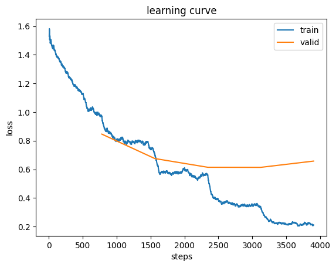
learner.recorder.plot_sched()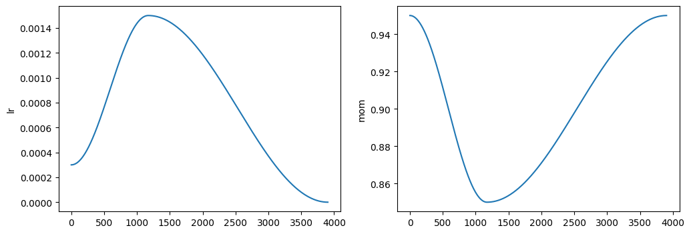
learner.recorder.values[[0.9695535898208618, 0.84586501121521, 0.7067999839782715],
[0.7094835638999939, 0.675391674041748, 0.7713000178337097],
[0.5630033016204834, 0.6143324375152588, 0.7939000129699707],
[0.3396357297897339, 0.6137450933456421, 0.8051999807357788],
[0.21176433563232422, 0.6575654149055481, 0.8043000102043152]]learner.show_results()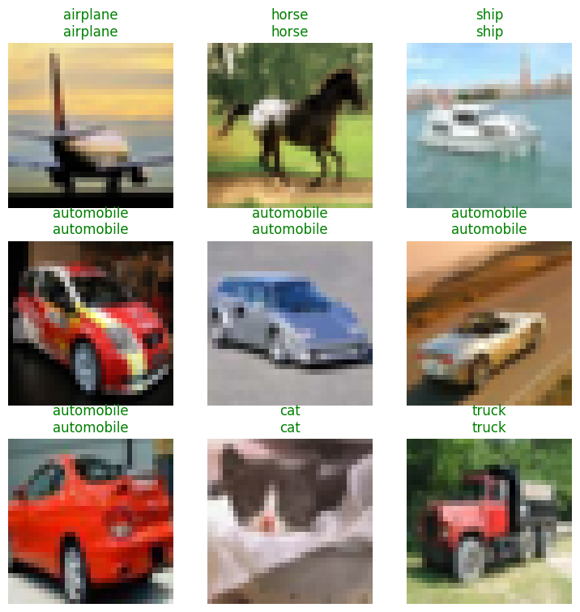
learner.summary()
0.00% [0/5 00:00<?]
0.00% [0/1 00:00<?]
Sequential (Input shape: 64 x 3 x 32 x 32)
============================================================================
Layer (type) Output Shape Param # Trainable
============================================================================
64 x 64 x 16 x 16
Conv2d 9408 True
BatchNorm2d 128 True
ReLU
____________________________________________________________________________
64 x 64 x 8 x 8
MaxPool2d
Conv2d 36864 True
BatchNorm2d 128 True
ReLU
Conv2d 36864 True
BatchNorm2d 128 True
Conv2d 36864 True
BatchNorm2d 128 True
ReLU
Conv2d 36864 True
BatchNorm2d 128 True
____________________________________________________________________________
64 x 128 x 4 x 4
Conv2d 73728 True
BatchNorm2d 256 True
ReLU
Conv2d 147456 True
BatchNorm2d 256 True
Conv2d 8192 True
BatchNorm2d 256 True
Conv2d 147456 True
BatchNorm2d 256 True
ReLU
Conv2d 147456 True
BatchNorm2d 256 True
____________________________________________________________________________
64 x 256 x 2 x 2
Conv2d 294912 True
BatchNorm2d 512 True
ReLU
Conv2d 589824 True
BatchNorm2d 512 True
Conv2d 32768 True
BatchNorm2d 512 True
Conv2d 589824 True
BatchNorm2d 512 True
ReLU
Conv2d 589824 True
BatchNorm2d 512 True
____________________________________________________________________________
64 x 512 x 1 x 1
Conv2d 1179648 True
BatchNorm2d 1024 True
ReLU
Conv2d 2359296 True
BatchNorm2d 1024 True
Conv2d 131072 True
BatchNorm2d 1024 True
Conv2d 2359296 True
BatchNorm2d 1024 True
ReLU
Conv2d 2359296 True
BatchNorm2d 1024 True
AdaptiveAvgPool2d
AdaptiveMaxPool2d
____________________________________________________________________________
64 x 1024
Flatten
BatchNorm1d 2048 True
Dropout
____________________________________________________________________________
64 x 512
Linear 524288 True
ReLU
BatchNorm1d 1024 True
Dropout
____________________________________________________________________________
64 x 10
Linear 5120 True
____________________________________________________________________________
Total params: 11,708,992
Total trainable params: 11,708,992
Total non-trainable params: 0
Optimizer used: <function Adam at 0x00000242A7E560C0>
Loss function: FlattenedLoss of CrossEntropyLoss()
Model unfrozen
Callbacks:
- ActivationStats
- TrainEvalCallback
- CastToTensor
- Recorder
- ProgressCallbackinterp = ClassificationInterpretation.from_learner(learner)
print(interp.plot_top_losses(9))None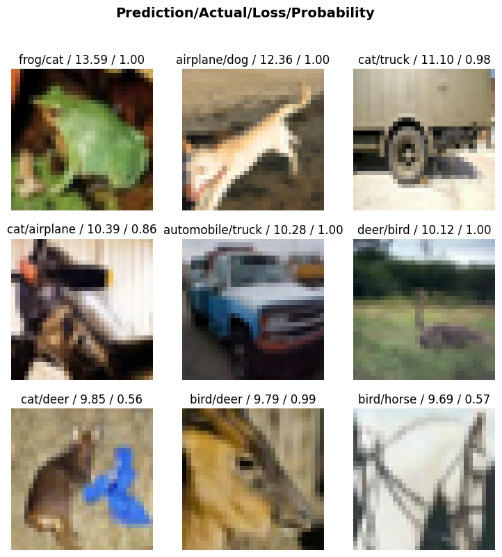
interp.plot_confusion_matrix()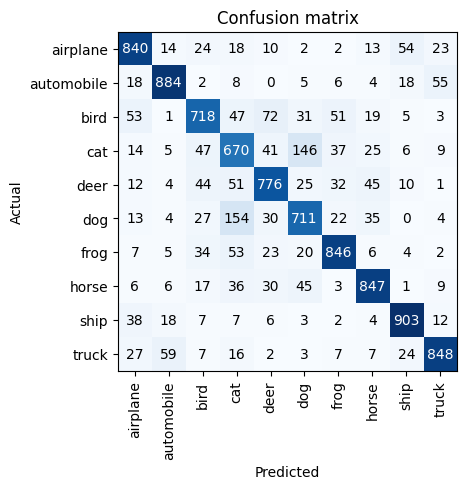
Retnet18 add Augmentation
dls = ImageDataLoaders.from_folder(cifar_path, valid='test', item_tfms=Resize(236), batch_tfms=aug_transforms(size=224), bs=16)learner = vision_learner(dls, resnet18, metrics=accuracy, cbs=[ActivationStats(with_hist=True), GradientAccumulation(n_acc=4)])learner.lr_find()/home/tzyy/miniconda3/envs/fastai/lib/python3.12/site-packages/fastai/callback/core.py:71: UserWarning: You are shadowing an attribute (modules) that exists in the learner. Use `self.learn.modules` to avoid this
warn(f"You are shadowing an attribute ({name}) that exists in the learner. Use `self.learn.{name}` to avoid this") 0.00% [0/1 00:00<?]
0.42% [13/3125 00:05<20:36... 3.7900]
--------------------------------------------------------------------------- KeyboardInterrupt Traceback (most recent call last) Cell In[18], line 1 ----> 1 learner.lr_find() File ~/miniconda3/envs/fastai/lib/python3.12/site-packages/fastai/callback/schedule.py:296, in lr_find(self, start_lr, end_lr, num_it, stop_div, show_plot, suggest_funcs) 294 n_epoch = num_it//len(self.dls.train) + 1 295 cb=LRFinder(start_lr=start_lr, end_lr=end_lr, num_it=num_it, stop_div=stop_div) --> 296 with self.no_logging(): self.fit(n_epoch, cbs=cb) 297 if suggest_funcs is not None: 298 lrs, losses = tensor(self.recorder.lrs[num_it//10:-5]), tensor(self.recorder.losses[num_it//10:-5]) File ~/miniconda3/envs/fastai/lib/python3.12/site-packages/fastai/learner.py:272, in Learner.fit(self, n_epoch, lr, wd, cbs, reset_opt, start_epoch) 270 self.opt.set_hypers(lr=self.lr if lr is None else lr) 271 self.n_epoch = n_epoch --> 272 self._with_events(self._do_fit, 'fit', CancelFitException, self._end_cleanup) File ~/miniconda3/envs/fastai/lib/python3.12/site-packages/fastai/learner.py:207, in Learner._with_events(self, f, event_type, ex, final) 206 def _with_events(self, f, event_type, ex, final=noop): --> 207 try: self(f'before_{event_type}'); f() 208 except ex: self(f'after_cancel_{event_type}') 209 self(f'after_{event_type}'); final() File ~/miniconda3/envs/fastai/lib/python3.12/site-packages/fastai/learner.py:261, in Learner._do_fit(self) 259 for epoch in range(self.n_epoch): 260 self.epoch=epoch --> 261 self._with_events(self._do_epoch, 'epoch', CancelEpochException) File ~/miniconda3/envs/fastai/lib/python3.12/site-packages/fastai/learner.py:207, in Learner._with_events(self, f, event_type, ex, final) 206 def _with_events(self, f, event_type, ex, final=noop): --> 207 try: self(f'before_{event_type}'); f() 208 except ex: self(f'after_cancel_{event_type}') 209 self(f'after_{event_type}'); final() File ~/miniconda3/envs/fastai/lib/python3.12/site-packages/fastai/learner.py:255, in Learner._do_epoch(self) 254 def _do_epoch(self): --> 255 self._do_epoch_train() 256 self._do_epoch_validate() File ~/miniconda3/envs/fastai/lib/python3.12/site-packages/fastai/learner.py:247, in Learner._do_epoch_train(self) 245 def _do_epoch_train(self): 246 self.dl = self.dls.train --> 247 self._with_events(self.all_batches, 'train', CancelTrainException) File ~/miniconda3/envs/fastai/lib/python3.12/site-packages/fastai/learner.py:207, in Learner._with_events(self, f, event_type, ex, final) 206 def _with_events(self, f, event_type, ex, final=noop): --> 207 try: self(f'before_{event_type}'); f() 208 except ex: self(f'after_cancel_{event_type}') 209 self(f'after_{event_type}'); final() File ~/miniconda3/envs/fastai/lib/python3.12/site-packages/fastai/learner.py:213, in Learner.all_batches(self) 211 def all_batches(self): 212 self.n_iter = len(self.dl) --> 213 for o in enumerate(self.dl): self.one_batch(*o) File ~/miniconda3/envs/fastai/lib/python3.12/site-packages/fastai/learner.py:243, in Learner.one_batch(self, i, b) 241 b = self._set_device(b) 242 self._split(b) --> 243 self._with_events(self._do_one_batch, 'batch', CancelBatchException) File ~/miniconda3/envs/fastai/lib/python3.12/site-packages/fastai/learner.py:207, in Learner._with_events(self, f, event_type, ex, final) 206 def _with_events(self, f, event_type, ex, final=noop): --> 207 try: self(f'before_{event_type}'); f() 208 except ex: self(f'after_cancel_{event_type}') 209 self(f'after_{event_type}'); final() File ~/miniconda3/envs/fastai/lib/python3.12/site-packages/fastai/learner.py:224, in Learner._do_one_batch(self) 223 def _do_one_batch(self): --> 224 self.pred = self.model(*self.xb) 225 self('after_pred') 226 if len(self.yb): File ~/miniconda3/envs/fastai/lib/python3.12/site-packages/torch/nn/modules/module.py:1779, in Module._wrapped_call_impl(self, *args, **kwargs) 1777 return self._compiled_call_impl(*args, **kwargs) # type: ignore[misc] 1778 else: -> 1779 return self._call_impl(*args, **kwargs) File ~/miniconda3/envs/fastai/lib/python3.12/site-packages/torch/nn/modules/module.py:1790, in Module._call_impl(self, *args, **kwargs) 1785 # If we don't have any hooks, we want to skip the rest of the logic in 1786 # this function, and just call forward. 1787 if not (self._backward_hooks or self._backward_pre_hooks or self._forward_hooks or self._forward_pre_hooks 1788 or _global_backward_pre_hooks or _global_backward_hooks 1789 or _global_forward_hooks or _global_forward_pre_hooks): -> 1790 return forward_call(*args, **kwargs) 1792 result = None 1793 called_always_called_hooks = set() File ~/miniconda3/envs/fastai/lib/python3.12/site-packages/torch/nn/modules/container.py:253, in Sequential.forward(self, input) 249 """ 250 Runs the forward pass. 251 """ 252 for module in self: --> 253 input = module(input) 254 return input File ~/miniconda3/envs/fastai/lib/python3.12/site-packages/torch/nn/modules/module.py:1779, in Module._wrapped_call_impl(self, *args, **kwargs) 1777 return self._compiled_call_impl(*args, **kwargs) # type: ignore[misc] 1778 else: -> 1779 return self._call_impl(*args, **kwargs) File ~/miniconda3/envs/fastai/lib/python3.12/site-packages/torch/nn/modules/module.py:1790, in Module._call_impl(self, *args, **kwargs) 1785 # If we don't have any hooks, we want to skip the rest of the logic in 1786 # this function, and just call forward. 1787 if not (self._backward_hooks or self._backward_pre_hooks or self._forward_hooks or self._forward_pre_hooks 1788 or _global_backward_pre_hooks or _global_backward_hooks 1789 or _global_forward_hooks or _global_forward_pre_hooks): -> 1790 return forward_call(*args, **kwargs) 1792 result = None 1793 called_always_called_hooks = set() File ~/miniconda3/envs/fastai/lib/python3.12/site-packages/torch/nn/modules/container.py:253, in Sequential.forward(self, input) 249 """ 250 Runs the forward pass. 251 """ 252 for module in self: --> 253 input = module(input) 254 return input File ~/miniconda3/envs/fastai/lib/python3.12/site-packages/torch/nn/modules/module.py:1779, in Module._wrapped_call_impl(self, *args, **kwargs) 1777 return self._compiled_call_impl(*args, **kwargs) # type: ignore[misc] 1778 else: -> 1779 return self._call_impl(*args, **kwargs) File ~/miniconda3/envs/fastai/lib/python3.12/site-packages/torch/nn/modules/module.py:1885, in Module._call_impl(self, *args, **kwargs) 1882 return inner() 1884 try: -> 1885 return inner() 1886 except Exception: 1887 # run always called hooks if they have not already been run 1888 # For now only forward hooks have the always_call option but perhaps 1889 # this functionality should be added to full backward hooks as well. 1890 for hook_id, hook in _global_forward_hooks.items(): File ~/miniconda3/envs/fastai/lib/python3.12/site-packages/torch/nn/modules/module.py:1846, in Module._call_impl.<locals>.inner() 1844 hook_result = hook(self, args, kwargs, result) 1845 else: -> 1846 hook_result = hook(self, args, result) 1848 if hook_result is not None: 1849 result = hook_result File ~/miniconda3/envs/fastai/lib/python3.12/site-packages/fastai/callback/hook.py:26, in Hook.hook_fn(self, module, input, output) 24 "Applies `hook_func` to `module`, `input`, `output`." 25 if self.detach: ---> 26 input,output = to_detach(input, cpu=self.cpu, gather=self.gather),to_detach(output, cpu=self.cpu, gather=self.gather) 27 self.stored = self.hook_func(module, input, output) File ~/miniconda3/envs/fastai/lib/python3.12/site-packages/fastai/torch_core.py:246, in to_detach(b, cpu, gather) 244 if gather: x = maybe_gather(x) 245 return x.cpu() if cpu else x --> 246 return apply(_inner, b, cpu=cpu, gather=gather) File ~/miniconda3/envs/fastai/lib/python3.12/site-packages/fastai/torch_core.py:226, in apply(func, x, *args, **kwargs) 224 if is_listy(x): return type(x)([apply(func, o, *args, **kwargs) for o in x]) 225 if isinstance(x,(dict,MutableMapping)): return {k: apply(func, v, *args, **kwargs) for k,v in x.items()} --> 226 res = func(x, *args, **kwargs) 227 return res if x is None else retain_type(res, x) File ~/miniconda3/envs/fastai/lib/python3.12/site-packages/fastai/torch_core.py:245, in to_detach.<locals>._inner(x, cpu, gather) 243 x = x.detach() 244 if gather: x = maybe_gather(x) --> 245 return x.cpu() if cpu else x KeyboardInterrupt:
learner.fine_tune(5, 1e-3)| epoch | train_loss | valid_loss | accuracy | time |
|---|---|---|---|---|
| 0 | 0.752246 | 0.477425 | 0.834700 | 33:42 |
| epoch | train_loss | valid_loss | accuracy | time |
|---|---|---|---|---|
| 0 | 0.414451 | 0.260418 | 0.911500 | 38:52 |
| 1 | 0.330205 | 0.211401 | 0.925800 | 38:11 |
| 2 | 0.237723 | 0.168380 | 0.943000 | 38:02 |
| 3 | 0.146230 | 0.141586 | 0.951300 | 37:57 |
| 4 | 0.147777 | 0.135820 | 0.952600 | 38:02 |
timm/convnext_tiny.in12k_ft_in1k
learner = vision_learner(dls, 'convnext_tiny.in12k_ft_in1k', metrics=accuracy, cbs=ActivationStats(with_hist=True))Warning: You are sending unauthenticated requests to the HF Hub. Please set a HF_TOKEN to enable higher rate limits and faster downloads.learner.lr_find()d:\program\quarto\blog\.venv\Lib\site-packages\fastai\callback\core.py:71: UserWarning: You are shadowing an attribute (modules) that exists in the learner. Use `self.learn.modules` to avoid this
warn(f"You are shadowing an attribute ({name}) that exists in the learner. Use `self.learn.{name}` to avoid this")SuggestedLRs(valley=0.0012022644514217973)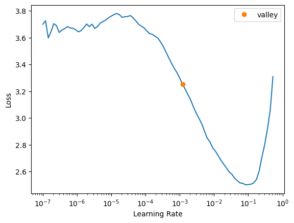
learner.fine_tune(5, 1e-3)| epoch | train_loss | valid_loss | accuracy | time |
|---|---|---|---|---|
| 0 | 0.807566 | 0.678986 | 0.772700 | 03:58 |
| epoch | train_loss | valid_loss | accuracy | time |
|---|---|---|---|---|
| 0 | 0.485664 | 0.416037 | 0.857700 | 03:59 |
| 1 | 0.355099 | 0.330098 | 0.890000 | 04:02 |
| 2 | 0.250564 | 0.305851 | 0.897600 | 04:06 |
| 3 | 0.159536 | 0.306448 | 0.901600 | 04:04 |
| 4 | 0.121840 | 0.309834 | 0.901700 | 04:07 |
learner.recorder.plot_loss()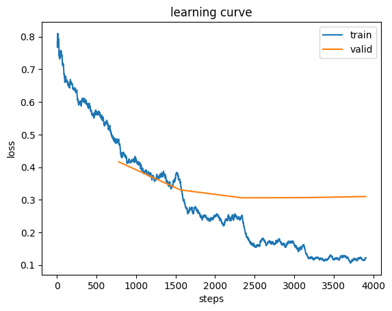
interp = ClassificationInterpretation.from_learner(learner)
print(interp.plot_top_losses(9))None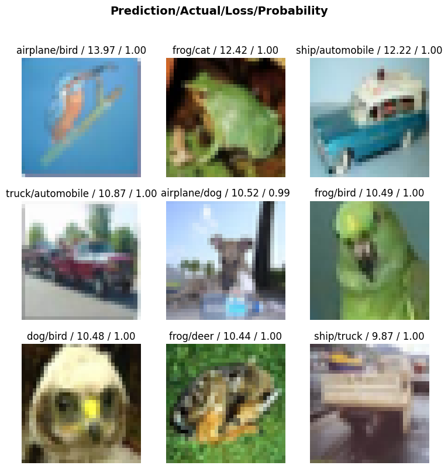
interp.plot_confusion_matrix()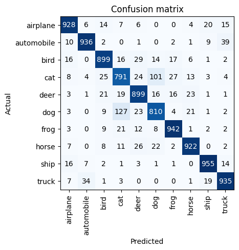
timm/convnext_tiny.in12k_ft_in1k Add Augmentation
dls = ImageDataLoaders.from_folder(cifar_path, valid='test', item_tfms=Resize(236), batch_tfms=aug_transforms(size=224), bs=16)
learner = vision_learner(dls, 'convnext_tiny.in12k_ft_in1k', metrics=accuracy, cbs=ActivationStats(with_hist=True))
learner.fine_tune(3, 1e-3)/home/tzyy/miniconda3/envs/fastai/lib/python3.12/site-packages/fastai/callback/core.py:71: UserWarning: You are shadowing an attribute (modules) that exists in the learner. Use `self.learn.modules` to avoid this
warn(f"You are shadowing an attribute ({name}) that exists in the learner. Use `self.learn.{name}` to avoid this")| epoch | train_loss | valid_loss | accuracy | time |
|---|---|---|---|---|
| 0 | 0.158725 | 0.112125 | 0.966600 | 1:23:54 |
| epoch | train_loss | valid_loss | accuracy | time |
|---|---|---|---|---|
| 0 | 0.111598 | 0.072410 | 0.977300 | 1:20:17 |
| 1 | 0.077522 | 0.063243 | 0.979900 | 1:20:14 |
| 2 | 0.021888 | 0.051781 | 0.984800 | 1:20:43 |
Use Huuggingface API
加载本地数据
from huggingface_hub import notebook_login
notebook_login()from datasets import load_datasetdataset = load_dataset(str(cifar_path))datasetDatasetDict({
train: Dataset({
features: ['image', 'label'],
num_rows: 50000
})
test: Dataset({
features: ['image', 'label'],
num_rows: 10000
})
})dataset['train'].features['label']ClassLabel(names=['airplane', 'automobile', 'bird', 'cat', 'deer', 'dog', 'frog', 'horse', 'ship', 'truck'])dataset['train'][0]['label']0id2label = {}
label2id = {}
for idx, label in enumerate(dataset['train'].features['label'].names):
id2label[idx] = label
label2id[label] = idx
id2label, label2id({0: 'airplane',
1: 'automobile',
2: 'bird',
3: 'cat',
4: 'deer',
5: 'dog',
6: 'frog',
7: 'horse',
8: 'ship',
9: 'truck'},
{'airplane': 0,
'automobile': 1,
'bird': 2,
'cat': 3,
'deer': 4,
'dog': 5,
'frog': 6,
'horse': 7,
'ship': 8,
'truck': 9})model_name = 'timm/convnext_tiny.in12k_ft_in1k'数据预处理
from transformers import AutoImageProcessorprocessor = AutoImageProcessor.from_pretrained(model_name)Requested torchvision backend is not available. Falling back to pil backend.processorTimmWrapperImageProcessor {
"architecture": "convnext_tiny",
"data_config": {
"crop_mode": "center",
"crop_pct": 0.95,
"input_size": [
3,
224,
224
],
"interpolation": "bicubic",
"mean": [
0.485,
0.456,
0.406
],
"std": [
0.229,
0.224,
0.225
]
},
"image_processor_type": "TimmWrapperImageProcessor"
}from torchvision.transforms import v2crop_size = 224
size = math.ceil(crop_size / 0.95)train_tfms = v2.Compose(
[v2.RandomResizedCrop(crop_size),
v2.RandAugment(),
v2.ToImage(),
v2.ToDtype(torch.float32, scale=True),
v2.Normalize(processor.data_config['mean'], processor.data_config['std'])]
)test_tfms = v2.Compose(
[v2.Resize(size),
v2.CenterCrop(crop_size),
v2.ToImage(),
v2.ToDtype(torch.float32, scale=True),
v2.Normalize(processor.data_config['mean'], processor.data_config['std'])]
)def train_transforms(examples):
examples["pixel_values"] = [train_tfms(img.convert("RGB")) for img in examples["image"]]
del examples["image"]
return examplesdef eval_transforms(examples):
examples["pixel_values"] = [test_tfms(img.convert("RGB")) for img in examples["image"]]
del examples["image"]
return examplestrain_ds = dataset['train'].with_transform(train_transforms)
eval_ds = dataset['test'].with_transform(eval_transforms)from torchvision.transforms.functional import to_pil_image
print(train_ds[0]['label'])
to_pil_image(train_ds[0]['pixel_values'])0准备训练参数
from transformers import TrainingArgumentsmn = model_name.split("/")[-1]batch_size=64args = TrainingArguments(
f"{mn}-finetuned-cifar10",
remove_unused_columns=False,
eval_strategy = "epoch",
save_strategy = "epoch",
learning_rate=5e-5,
per_device_train_batch_size=batch_size,
gradient_accumulation_steps=4,
per_device_eval_batch_size=batch_size,
num_train_epochs=3,
warmup_steps=235,
logging_steps=10,
load_best_model_at_end=True,
metric_for_best_model="accuracy",
push_to_hub=True,
)from transformers import AutoModelForImageClassificationmodel = AutoModelForImageClassification.from_pretrained(model_name, id2label=id2label, label2id=label2id, ignore_mismatched_sizes=True, num_labels=10)TimmWrapperForImageClassification LOAD REPORT from: timm/convnext_tiny.in12k_ft_in1k
Key | Status |
--------------------------+----------+-------------------------------------------------------------------------------------------
timm_model.head.fc.bias | MISMATCH | Reinit due to size mismatch - ckpt: torch.Size([1000]) vs model:torch.Size([10])
timm_model.head.fc.weight | MISMATCH | Reinit due to size mismatch - ckpt: torch.Size([1000, 768]) vs model:torch.Size([10, 768])
Notes:
- MISMATCH: ckpt weights were loaded, but they did not match the original empty weight shapes.
from transformers import Trainerfrom transformers import DefaultDataCollator
collator_fn = DefaultDataCollator()import evaluatemetric = evaluate.load('accuracy')import numpy as np
def compute_metrics(eval_pred):
predictions, labels = eval_pred
predictions = np.argmax(predictions, axis=1)
return metric.compute(predictions=predictions, references=labels)trainer = Trainer(
model,
args,
data_collator=collator_fn,
train_dataset=train_ds,
eval_dataset=eval_ds,
processing_class=processor,
compute_metrics=compute_metrics
)train_results = trainer.train()
[588/588 1:03:16, Epoch 3/3]
| Epoch | Training Loss | Validation Loss | Accuracy |
|---|---|---|---|
| 1 | 0.473368 | 0.114332 | 0.965100 |
| 2 | 0.352160 | 0.079307 | 0.973200 |
| 3 | 0.265493 | 0.056940 | 0.982600 |
The `save_pretrained` method is disabled for TimmWrapperImageProcessor. The image processor configuration is saved directly in `config.json` when `save_pretrained` is called for saving the model.trainer.save_model()trainer.log_metrics("train", train_results.metrics)***** train metrics *****
epoch = 3.0
total_flos = 3511066743GF
train_loss = 0.5505
train_runtime = 1:03:23.13
train_samples_per_second = 39.441
train_steps_per_second = 0.155trainer.save_metrics("train", train_results.metrics)trainer.save_state()trainer.state.log_history[{'loss': 2.5530990600585937,
'grad_norm': 11.174111366271973,
'learning_rate': 1.9148936170212767e-06,
'epoch': 0.05115089514066496,
'step': 10},
{'loss': 2.261178207397461,
'grad_norm': 12.512361526489258,
'learning_rate': 4.0425531914893625e-06,
'epoch': 0.10230179028132992,
'step': 20},
{'loss': 1.9995292663574218,
'grad_norm': 11.970958709716797,
'learning_rate': 6.170212765957447e-06,
'epoch': 0.1534526854219949,
'step': 30},
{'loss': 1.6379156112670898,
'grad_norm': 9.802407264709473,
'learning_rate': 8.297872340425532e-06,
'epoch': 0.20460358056265984,
'step': 40},
{'loss': 1.3058168411254882,
'grad_norm': 18.1107120513916,
'learning_rate': 1.0425531914893617e-05,
'epoch': 0.2557544757033248,
'step': 50},
{'loss': 0.9497040748596192,
'grad_norm': 30.938528060913086,
'learning_rate': 1.2553191489361702e-05,
'epoch': 0.3069053708439898,
'step': 60},
{'loss': 0.7797219753265381,
'grad_norm': 11.254836082458496,
'learning_rate': 1.4680851063829787e-05,
'epoch': 0.35805626598465473,
'step': 70},
{'loss': 0.6622886657714844,
'grad_norm': 14.980562210083008,
'learning_rate': 1.6808510638297873e-05,
'epoch': 0.4092071611253197,
'step': 80},
{'loss': 0.5983432769775391,
'grad_norm': 9.1489896774292,
'learning_rate': 1.8936170212765957e-05,
'epoch': 0.46035805626598464,
'step': 90},
{'loss': 0.5886715888977051,
'grad_norm': 19.84036636352539,
'learning_rate': 2.1063829787234043e-05,
'epoch': 0.5115089514066496,
'step': 100},
{'loss': 0.5491302490234375,
'grad_norm': 16.62837028503418,
'learning_rate': 2.319148936170213e-05,
'epoch': 0.5626598465473146,
'step': 110},
{'loss': 0.5003538608551026,
'grad_norm': 11.271263122558594,
'learning_rate': 2.5319148936170213e-05,
'epoch': 0.6138107416879796,
'step': 120},
{'loss': 0.5015690803527832,
'grad_norm': 16.062374114990234,
'learning_rate': 2.74468085106383e-05,
'epoch': 0.6649616368286445,
'step': 130},
{'loss': 0.48798460960388185,
'grad_norm': 13.106578826904297,
'learning_rate': 2.9574468085106383e-05,
'epoch': 0.7161125319693095,
'step': 140},
{'loss': 0.4911414623260498,
'grad_norm': 14.592195510864258,
'learning_rate': 3.170212765957447e-05,
'epoch': 0.7672634271099744,
'step': 150},
{'loss': 0.5030445098876953,
'grad_norm': 13.473020553588867,
'learning_rate': 3.382978723404255e-05,
'epoch': 0.8184143222506394,
'step': 160},
{'loss': 0.5017608165740967,
'grad_norm': 11.857600212097168,
'learning_rate': 3.595744680851064e-05,
'epoch': 0.8695652173913043,
'step': 170},
{'loss': 0.46956887245178225,
'grad_norm': 12.678689956665039,
'learning_rate': 3.8085106382978726e-05,
'epoch': 0.9207161125319693,
'step': 180},
{'loss': 0.47336812019348146,
'grad_norm': 9.090633392333984,
'learning_rate': 4.0212765957446816e-05,
'epoch': 0.9718670076726342,
'step': 190},
{'eval_loss': 0.11433204263448715,
'eval_accuracy': 0.9651,
'eval_runtime': 43.1223,
'eval_samples_per_second': 231.899,
'eval_steps_per_second': 3.641,
'epoch': 1.0,
'step': 196},
{'loss': 0.4892763614654541,
'grad_norm': 8.802633285522461,
'learning_rate': 4.23404255319149e-05,
'epoch': 1.020460358056266,
'step': 200},
{'loss': 0.437635612487793,
'grad_norm': 9.375027656555176,
'learning_rate': 4.4468085106382975e-05,
'epoch': 1.0716112531969308,
'step': 210},
{'loss': 0.44023633003234863,
'grad_norm': 8.942699432373047,
'learning_rate': 4.6595744680851065e-05,
'epoch': 1.1227621483375958,
'step': 220},
{'loss': 0.4510353088378906,
'grad_norm': 10.292186737060547,
'learning_rate': 4.872340425531915e-05,
'epoch': 1.1739130434782608,
'step': 230},
{'loss': 0.4753444194793701,
'grad_norm': 8.505888938903809,
'learning_rate': 4.943342776203966e-05,
'epoch': 1.2250639386189257,
'step': 240},
{'loss': 0.48851375579833983,
'grad_norm': 8.63035774230957,
'learning_rate': 4.801699716713881e-05,
'epoch': 1.2762148337595907,
'step': 250},
{'loss': 0.41800127029418943,
'grad_norm': 9.18031120300293,
'learning_rate': 4.6600566572237966e-05,
'epoch': 1.3273657289002558,
'step': 260},
{'loss': 0.4238115310668945,
'grad_norm': 11.00832748413086,
'learning_rate': 4.518413597733711e-05,
'epoch': 1.3785166240409208,
'step': 270},
{'loss': 0.4415809154510498,
'grad_norm': 8.052766799926758,
'learning_rate': 4.376770538243626e-05,
'epoch': 1.4296675191815857,
'step': 280},
{'loss': 0.37944822311401366,
'grad_norm': 7.3368754386901855,
'learning_rate': 4.235127478753541e-05,
'epoch': 1.4808184143222507,
'step': 290},
{'loss': 0.4183849811553955,
'grad_norm': 5.14109468460083,
'learning_rate': 4.0934844192634564e-05,
'epoch': 1.5319693094629157,
'step': 300},
{'loss': 0.42579851150512693,
'grad_norm': 6.502427577972412,
'learning_rate': 3.951841359773371e-05,
'epoch': 1.5831202046035806,
'step': 310},
{'loss': 0.4303885459899902,
'grad_norm': 4.6304097175598145,
'learning_rate': 3.810198300283287e-05,
'epoch': 1.6342710997442456,
'step': 320},
{'loss': 0.41056432723999026,
'grad_norm': 5.989563465118408,
'learning_rate': 3.668555240793201e-05,
'epoch': 1.6854219948849105,
'step': 330},
{'loss': 0.36917107105255126,
'grad_norm': 5.92119026184082,
'learning_rate': 3.526912181303116e-05,
'epoch': 1.7365728900255755,
'step': 340},
{'loss': 0.39166769981384275,
'grad_norm': 7.3765950202941895,
'learning_rate': 3.3852691218130314e-05,
'epoch': 1.7877237851662404,
'step': 350},
{'loss': 0.3830305576324463,
'grad_norm': 7.6207733154296875,
'learning_rate': 3.2436260623229465e-05,
'epoch': 1.8388746803069054,
'step': 360},
{'loss': 0.36714653968811034,
'grad_norm': 8.140443801879883,
'learning_rate': 3.101983002832861e-05,
'epoch': 1.8900255754475703,
'step': 370},
{'loss': 0.36992480754852297,
'grad_norm': 11.046235084533691,
'learning_rate': 2.9603399433427764e-05,
'epoch': 1.9411764705882353,
'step': 380},
{'loss': 0.35216023921966555,
'grad_norm': 6.4048027992248535,
'learning_rate': 2.8186968838526912e-05,
'epoch': 1.9923273657289002,
'step': 390},
{'eval_loss': 0.07930734008550644,
'eval_accuracy': 0.9732,
'eval_runtime': 39.9705,
'eval_samples_per_second': 250.185,
'eval_steps_per_second': 3.928,
'epoch': 2.0,
'step': 392},
{'loss': 0.34023056030273435,
'grad_norm': 4.844632148742676,
'learning_rate': 2.6770538243626064e-05,
'epoch': 2.040920716112532,
'step': 400},
{'loss': 0.37970848083496095,
'grad_norm': 6.149252891540527,
'learning_rate': 2.535410764872521e-05,
'epoch': 2.0920716112531967,
'step': 410},
{'loss': 0.35735130310058594,
'grad_norm': 6.1530537605285645,
'learning_rate': 2.3937677053824363e-05,
'epoch': 2.1432225063938617,
'step': 420},
{'loss': 0.35594940185546875,
'grad_norm': 6.6991400718688965,
'learning_rate': 2.2521246458923514e-05,
'epoch': 2.1943734015345266,
'step': 430},
{'loss': 0.3288498163223267,
'grad_norm': 5.350732803344727,
'learning_rate': 2.1104815864022666e-05,
'epoch': 2.2455242966751916,
'step': 440},
{'loss': 0.3279449462890625,
'grad_norm': 6.863609790802002,
'learning_rate': 1.9688385269121814e-05,
'epoch': 2.296675191815857,
'step': 450},
{'loss': 0.2943387269973755,
'grad_norm': 9.470367431640625,
'learning_rate': 1.8271954674220965e-05,
'epoch': 2.3478260869565215,
'step': 460},
{'loss': 0.31543745994567873,
'grad_norm': 7.332601070404053,
'learning_rate': 1.6855524079320116e-05,
'epoch': 2.398976982097187,
'step': 470},
{'loss': 0.3062387704849243,
'grad_norm': 7.661037445068359,
'learning_rate': 1.5439093484419264e-05,
'epoch': 2.4501278772378514,
'step': 480},
{'loss': 0.3196589946746826,
'grad_norm': 6.089075565338135,
'learning_rate': 1.4022662889518415e-05,
'epoch': 2.501278772378517,
'step': 490},
{'loss': 0.28853592872619627,
'grad_norm': 5.273873329162598,
'learning_rate': 1.2606232294617565e-05,
'epoch': 2.5524296675191813,
'step': 500},
{'loss': 0.3248112201690674,
'grad_norm': 6.771516799926758,
'learning_rate': 1.1189801699716715e-05,
'epoch': 2.6035805626598467,
'step': 510},
{'loss': 0.29603469371795654,
'grad_norm': 8.325399398803711,
'learning_rate': 9.773371104815864e-06,
'epoch': 2.6547314578005117,
'step': 520},
{'loss': 0.2825981855392456,
'grad_norm': 4.143459796905518,
'learning_rate': 8.356940509915016e-06,
'epoch': 2.7058823529411766,
'step': 530},
{'loss': 0.29316418170928954,
'grad_norm': 5.486754894256592,
'learning_rate': 6.940509915014165e-06,
'epoch': 2.7570332480818416,
'step': 540},
{'loss': 0.2683124542236328,
'grad_norm': 7.48090124130249,
'learning_rate': 5.524079320113314e-06,
'epoch': 2.8081841432225065,
'step': 550},
{'loss': 0.31810522079467773,
'grad_norm': 5.174209117889404,
'learning_rate': 4.107648725212465e-06,
'epoch': 2.8593350383631715,
'step': 560},
{'loss': 0.27804884910583494,
'grad_norm': 5.864567756652832,
'learning_rate': 2.691218130311615e-06,
'epoch': 2.9104859335038364,
'step': 570},
{'loss': 0.26549341678619387,
'grad_norm': 5.443009853363037,
'learning_rate': 1.2747875354107649e-06,
'epoch': 2.9616368286445014,
'step': 580},
{'eval_loss': 0.056940171867609024,
'eval_accuracy': 0.9826,
'eval_runtime': 40.4977,
'eval_samples_per_second': 246.928,
'eval_steps_per_second': 3.877,
'epoch': 3.0,
'step': 588},
{'train_runtime': 3803.1332,
'train_samples_per_second': 39.441,
'train_steps_per_second': 0.155,
'total_flos': 3.7699792091136e+18,
'train_loss': 0.5505135343188331,
'epoch': 3.0,
'step': 588}]